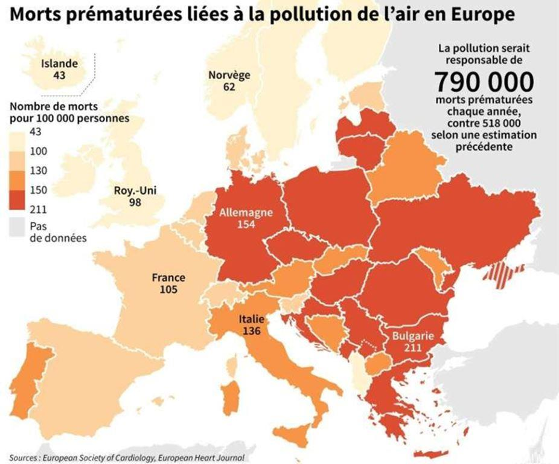
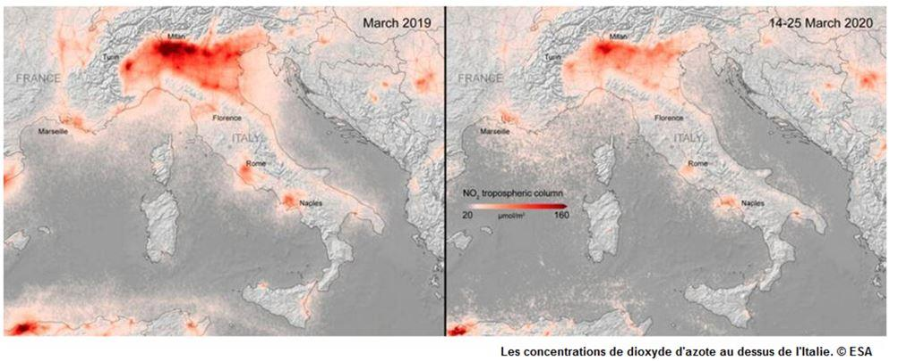
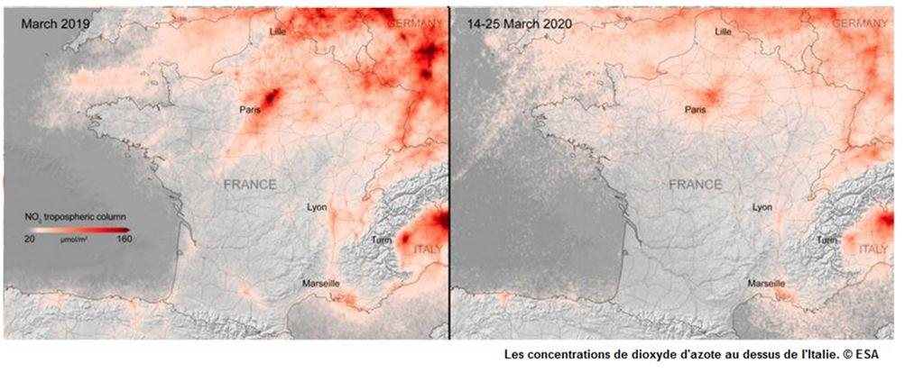
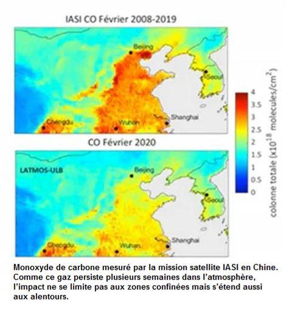
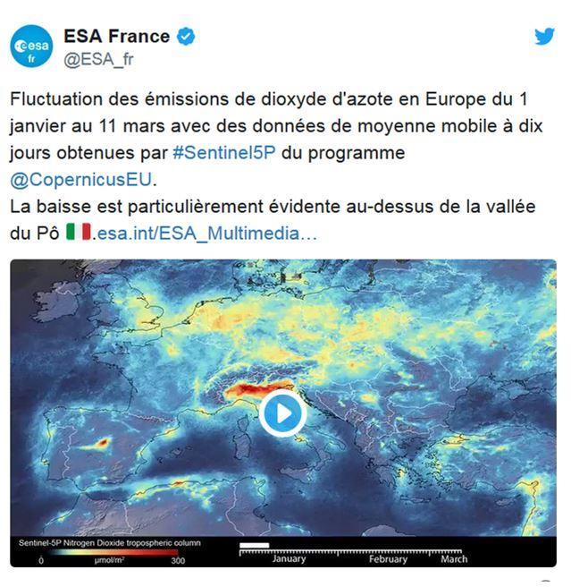

L’Organisation Mondiale de la Santé (OMS) estime, selon une nouvelle étude en 20191, la pollution responsable de près de 800.000 morts par an en Europe et 8,8 millions dans le monde.
En moyenne, la surmortalité mondiale attribuée à la pollution de l'air est de 120 décès par an pour 100.000 habitants. Ce taux est supérieur en Europe2, bien que les contrôles y soient plus stricts que dans d'autres régions. « Cela s'explique par la combinaison d'une piètre qualité de l'air et d'une forte densité de population, qui aboutit à une exposition parmi les plus élevées du monde », selon le professeur Lelieveld3.
Cette évaluation est « probablement sous-estimée », ajoute The Lancet, compte tenu « des nombreux polluants chimiques émergents qui restent encore à identifier ». Le phénomène touche en premier lieu « les populations pauvres et vulnérables » car 92 % de ces décès surviennent en effet dans des pays à revenu faible ou moyen et, dans chaque pays, ils concernent davantage les minorités et les populations marginalisées. Dans les pays en voie d'industrialisation rapide, comme la Chine, l'Inde, le Kenya, Madagascar ou le Pakistan, jusqu'à un décès sur quatre pourrait être lié à la pollution.
C’est peut-être une des raisons de l’affolement mondial face à la pandémie du Covid-19… La pollution de l’air tue chaque année beaucoup plus que le coronavirus mais cette fois les puissances mondiales sont directement touchées…
Mais les êtres humains ne sont pas les seuls à être touchés par la pollution de l’air. Les plantes et les animaux peuvent également subir les répercussions de la pollution atmosphérique.
De manière aiguë ou chronique, les polluants atmosphériques ont de lourds impacts sur les cultures et les écosystèmes. Ainsi, sur une période d’exposition prolongée à l’ozone, un affaiblissement des organismes et un fort ralentissement de la croissance sont observés, et à terme cela impacte le rendement des cultures agricoles. Les polluants peuvent également parcourir des distances importantes et atteindre des écosystèmes sensibles. Sous l’effet des oxydes d’azote (NOx) et du dioxyde de soufre (SO2), les pluies, neiges, brouillards deviennent plus acides et altèrent les sols et les cours d’eau (perte des éléments minéraux nutritifs). Ces apports engendrent un déséquilibre de l’écosystème. Cette transformation du milieu se traduit en général par un appauvrissement de la biodiversité puis par la perturbation du fonctionnement général des écosystèmes.
La pollution de l’air affecte également la faune : déclin de certaines populations pollinisatrices, difficultés de certaines espèces à se reproduire ou à se nourrir. Elle modifie la physiologie des organismes, l’anatomie et les caractéristiques du biotope et des populations.
Contre toute attente, l'antidote contre cette pollution atmosphérique n’est pas venu des accords internationaux relatifs au réchauffement climatique, ni même des injonctions de la jeune Greta Thunberg mais de l'arrivée du Coronavirus.
Les Etats craignent une mortalité importante, et avec la propagation de ce virus, des confinements partout dans le monde ont été décrétés.
Après des décennies de pollution qui étouffent la planète, un antidote providentiel tombe du ciel, le coronavirus.
Les accords internationaux relatifs au sauvetage de la planète finissent toujours par des échecs cuisants à cause des intérêts économiques. Ainsi, les États-Unis se sont bien vite retirés de tous les accords relatifs au réchauffement climatique.
Avec la propagation de coronavirus, les Etats, y compris les États-Unis, sont infectés et décrètent des confinements sanitaires. 187 pays sont touchés par l'épidémie qui se transforme en un laps de temps en pandémie. En ce même laps de temps tout le monde dans le monde rentre à son domicile.
Depuis la propagation de cette épidémie et la mise en œuvre généralisée des confinements, les villes paraissent désertées, les populations restent toujours endormies et les images qu’envoient les satellites sont impressionnantes.
Un exemple : début février 2020 un parking de voitures en Californie était toujours noir ; et un mois plus tard, d'après les images, il est totalement vide.
Milan grande ville italienne, d'habitude trop bruyante, est presque maintenant silencieuse. Les rues de Wuhan où le virus a fait son départ sont complétement désertées.
La planète compte actuellement 7,5 milliards d'individus. D'après, les informations que j'ai acquises 25% 4 de cette population mondiale se trouvent dans le confinement ou dans la quarantaine.

Ces images comparent la pollution au dioxyde d'azote moyenne mensuelle en 2019 avec la période du 14 au 25 mars, au cours de laquelle les mesures de confinement ont été prises en Europe. Le dioxyde d'azote (NO2), dégagé lors de la combustion d'énergie fossile, est l'un des principaux polluants émis par le transport routier et l'activité industrielle. Il affecte particulièrement la fonction pulmonaire et aggrave les maladies respiratoires.
Cet isolement, entraîne la baisse des niveaux des polluants atmosphériques et celui des gaz à effet de serre dans toutes les villes du monde.
Des équipes du CNRS ont ainsi mis en évidence la diminution de la quantité de monoxyde de carbone (CO) dans l'air au-dessus de la Chine en février 2020 comparé aux années précédentes, grâce aux données d'un autre satellite : IASI.5
Généralement plus les mesures de confinement sont strictes et serrées plus la pollution diminue. L'exemple nous vient de l'Inde aujourd'hui. Le pays contient 2 milliards 300 millions d'individus et pourtant le confinement se gère efficacement.
En outre, des chercheurs dans le domaine écologique déclarent que le monoxyde de carbone provenant des véhicules en circulation a été réduit considérablement de 50 % par rapport à l'année dernière.
La Chine toute seule produisait avant la crise 27 % de la pollution mondiale. La réduction des émissions de Co2, dans des proportions considérables, viennent du ralentissement des activités économiques de 50%. À la mi-mars, le gros de la crise sanitaire semblant passé, le mot d'ordre a été à la relance. Néanmoins, malgré l'ouverture des vannes du crédit par la banque centrale, la reprise de l'économie chinoise est demeurée poussive. La confiance altérée et le confinement de la plupart des pays dans le monde, n’ont pas permis la reprise économique espérée par la Chine.
Que faut-il retenir de toute cette panoplie de données statistiques ?
Trois thèmes importants se dégagent :
1) L’écologie environnementale :
Le but de cette écologie environnementale n'est plus de sauver uniquement la faune et la flore, mais aussi de préserver l'environnement pour sauver l'Homme. Maintenant le coronavirus nous a montré qu'il est fort possible de sauver la planète.
2) L'homme est toujours menacé :
Oui, avec la découverte de ce virus, personne n'est capable de protéger l'homme dans le monde. On se demande à quoi servent les laboratoires scientifiques de recherche de l'Amérique, de la Chine, et même les prix Nobel de toutes les sciences physiques et chimiques si parallèlement nous n’arrivons pas à anticiper le danger. A quoi donc servent les grandes universités de recherche scientifiques éparpillées dans les pays développés ?
3) Solidarité mondiale entre pays :
Le coronavirus se propage dans le monde entier. Cette épidémie prouve combien la solidarité entre les peuples , entre les pays est non seulement nécessaire mais primordiale pour combattre le virus mais que cette solidarité devrait également pouvoir se retrouver dans les actions à mener pour lutter contre la pollution puisque le nombre de morts est malheureusement chaque année plus important.
Prof. M.Z.
NOTES ET RÉFÉRENCES
1. Pour rappel l’estimation de 8,8 millions de morts par an en 2019 fait suite à une estimation de 6.5 millions de morts par an 2015 et 7 millions en 2016.
Partager cette page